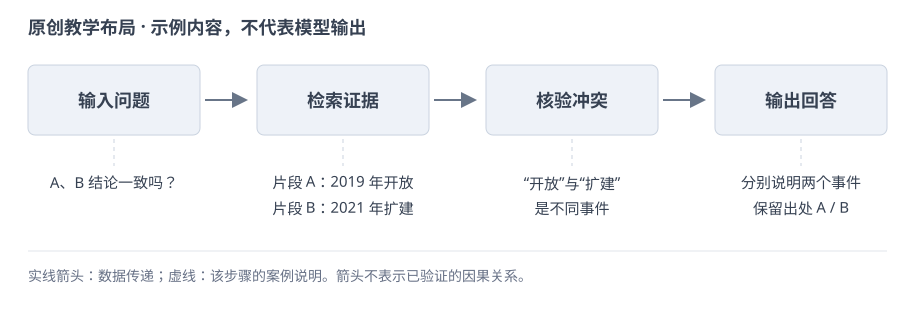

PAPERBANK · 论文少走弯路指南
先讲清贡献，再交代证据。
12 章、70 项检查、50 个例子。按主题往下看；有一条卡住，展开看做法、例子和原文。图表部分多讲一点，因为颜色、位置和连线都在传递信息。
主要面向实证型 CS / AI 论文，按学科、研究类型和投稿要求取舍。勾完清单也不保证录用，审稿人暂时还没接入我们的许愿池。
Markdown 全文 / skill 参考 · RQ 怎么写 · 如何 rebuttal · 绘图提示词 · 参考阅读 · 使用与转载许可
常用词，用一句话说明白
- RQ（Research Question）
- 论文要回答的研究问题。编号是组织方式，问题与证据对应才是关键。
- Hypothesis（假设）
- 对结果的可检验预期，例如“固定预算时，方法 A 的准确率高于 B”。
- Baseline（基线）
- 拿来比较的方法，得能代表你要解决的现有问题。
- 消融实验
- 删除或替换一个部分，尽量保持其他条件不变，看这个部分的作用。
- Rebuttal
- 回应审稿意见的阶段；时间、篇幅和允许补什么，按当年指南。
- 超参数
- 运行或训练前选择的设置，例如学习率、检索数量和停止阈值。


当前浏览器无法保存勾选，关闭页面后进度可能丢失。
1. 先想清楚，别急着写
5 条先确定研究对象、核心贡献和证据范围，再决定论文的名称与叙述重点。
贡献定位
说明、例子与参考
动笔前，先说清你到底发现了什么
先别急着打开论文模板。找一个不了解项目的同学，试着用几句话说清：你在解决什么问题，做了什么，最后多知道了什么。说不清，往往还没到润色英语的时候。
做法：先写一句话，再展开成一小段。把研究对象、现有办法卡在哪里、你的改动和结果放进去。写完看看：去掉方法名和“新颖、有效”这些词，还剩不剩具体内容？
边界：有时是表达没理顺，有时是证据还不够。先分清是哪一种，别让流畅的文字替你做判断。
把方法名换成研究内容
改前：教学示例：我们提出了一个新颖的多智能体问答框架，包含多个有效模块。
改后：假设研究：多文档问答需要同时找到不同文档中的证据，固定次数的检索可能漏掉关键条件，也可能重复调用。我们研究能否根据已有证据决定继续检索或开始回答，并在相同模型和信息范围下比较回答质量与调用成本。贡献的范围由这些比较决定。
改写给出了对象、困难、操作和验证方式，读者不用先记住方法名，也不会把研究目标误当成已经取得的结果。
来源与延伸阅读：作者提供的写作、绘图与进阶笔记；Mensh & Kording (2017) · Ten simple rules for structuring papers；NeurIPS · Paper Checklist
说明与参考
给读者一个能带走的重点
读者合上论文后，能记住一个有用的判断，就已经很好。别让五六个模块同时争当主角。
做法：先选出最重要的贡献，再把其他设计放回各自的位置：它为什么必需，替主贡献解决了哪一步困难。确实有多个独立发现，也要交代它们为什么值得放在同一篇里。
边界：一个中心不等于硬砍到只剩一个发现。能串起来就串，串不起来就重新想论文的范围。
来源与延伸阅读：作者提供的写作、绘图与进阶笔记
说明与参考
名字可以好记，事情要说准
一个好比喻能省掉半页解释。前提是，比喻背后真有那回事。给坐标修正程序起个“自主进化”的名字，不会凭空多出自主决策能力。
做法：先用普通话说明实际操作，再想一个方便读者记住的名字。想保留类比，就把类比和实现的对应关系写清楚。
边界：别拿流行术语凑新意。名字拿掉以后，贡献也应该站得住。
来源与延伸阅读：作者提供的写作、绘图与进阶笔记
主张与证据
说明、例子与参考
引言里许的愿，实验里要还上
引言说省钱，实验就得算钱；引言说更稳，实验就得看波动。不能前面讲一个优点，后面拿另一个成绩来证明。
做法：给每个主张找一个位置：方法哪里实现了它，哪个实验检验了它，结果支持到哪一步。找不到的，补实验或者改主张。用一张小表就够，不必做成大工程。
边界：整体分数上涨，只能先说明整体变好了。想说是某个机制起作用，还得有能区分原因的对照。
给每项主张配一份证据
改前：教学示例：引言说系统更便宜、更可靠，实验只报告一次回答正确率。
改后：假设修订：若主张降低调用成本，就记录每题模型调用次数、输入输出量及统一价格下的费用；若主张回答更可靠，就报告正确率、证据支持率和多次运行的波动。没有成本记录时先删除省钱结论，只有整体涨分时不宣称证据筛选机制已获证明。
两种主张需要不同测量，整体分数不能同时证明成本下降和可靠性提高，删除缺证据的结论比换个形容词有效。
来源与延伸阅读：写作技能与检查方法；NeurIPS · Paper Checklist
说明与参考
失败的实验别随手扔
以后写分析、补附录、回审稿意见时，最想找回来的，常常就是当初那次没跑好的尝试。先留着，整理比重跑便宜。
做法：把配置、输出和失败原因一起保存。写论文时，挑能说明问题的结果：哪种直觉不成立，什么条件会失效，哪个方向不值得继续试。
边界：程序出错和方法失效是两回事。负结果也得检查对照，不能把一个故障写成一个发现。
来源与延伸阅读：作者提供的写作、绘图与进阶笔记
2. 开写以后，少走弯路
3 条用贡献句、提纲、草图和结果表推进讨论，并按关键论证分配篇幅。
起草与结构
说明、例子与参考
别等整篇想好了才开始写
先做出能讨论的小东西：一句贡献、一页提纲、一张草图、一张结果表。拿着这些讨论，比对着空白文档想“完整故事”容易得多。
做法：先把已有证据摆出来，再定主线和章节。方法与实验先写清楚，引言跟着调整，摘要最后再压一遍。中途发现主张不成立，就回去改，不用等全篇写完。
边界：顺序不是规定。概念图可以先画，结果图得等真实结果出来。
用可讨论的小材料开始写
改前：教学示例：等所有实验做完、故事完全想好后，再一次性写整篇论文。
改后：假设起草安排：先写研究问题和一句贡献，再列出检索、证据筛选、回答三个步骤，画出输入与输出；把已有结果放进一张注明设置的表。合作者先讨论这些材料能支持哪项结论，方法与实验据此展开，摘要等主张稳定后再写，缺证据的位置暂不填结论。
小材料能暴露流程、设置和证据缺口，让讨论有明确对象；先占住结果位置不等于提前编好结果。
来源与延伸阅读：作者提供的写作、绘图与进阶笔记；Mensh & Kording (2017) · Ten simple rules for structuring papers
说明与参考
只看目录，也该知道你在干什么
目录像路线图。读完一串“模块一、模块二、模块三”，读者还是不知道接下来要去哪，这个目录就没帮上忙。
做法：同一层标题按同一逻辑分：方法按处理步骤，实验按要回答的问题。标题用实际动作或对象，图里的名字也跟着统一。
边界：不用死守每节最多几个子节。太碎就合并，确实有不同任务就分开。
来源与延伸阅读：作者提供的写作、绘图与进阶笔记
篇幅分配
说明、例子与参考
先给重要的东西留位置
页数就这么多。先留给读者必须看懂的地方：问题、关键设计、主要结果，以及结果成立的条件。别等背景写满了，才发现实验没地方解释。
做法：列出每章非讲不可的内容。超页时先删重复铺垫和空话，再挪实现细节。最后打开 PDF，看篇幅是不是真的花在重点上。
边界：写满不是目标，每页硬放一个实验也没必要。信息够了就停，格式按投稿要求来。
超页时先删重复背景
改前：教学示例：背景用了三页，实验只剩一页，于是缩小表格字体并删掉限制。
改后：假设修订安排：合并两段重复介绍检索增强问答的背景，保留理解跨文档证据所需的定义；给关键比较和结果解释留出正文位置，把完整参数表移到附录并准确引用。最后按作者指南检查篇幅和字号，保留影响主结论的条件、限制及必要对照。
篇幅先按论证需要分配，背景压缩可以减少重复，但不能用超页作为隐藏限制或违反模板的理由。
来源与延伸阅读：作者提供的写作、绘图与进阶笔记；Mensh & Kording (2017) · Ten simple rules for structuring papers；NeurIPS · Paper Checklist
3. 标题和摘要：让人愿意往下读
4 条标题交代研究内容，摘要完整说明问题、方法和结果，定稿时逐句核对正文。
标题与摘要
说明、例子与参考
标题别让人猜谜
好标题让人一眼知道研究什么，最好还能看出哪一点值得读。生僻词、缩写和俏皮话可以加，但别把正文入口堵住。
做法：分别写一个问题型、方法型和发现型标题，让不了解项目的人说说各自读出了什么。哪个最贴近你真正想讲的内容，就从哪个改。
边界：结论型标题尤其要收住范围。只在几种条件下成立的发现，别写得像普遍规律。
标题说明研究对象和边界
改前：教学示例：OmniMind：通向通用智能的自主进化问答革命。
改后：假设标题修改为《根据证据覆盖决定检索次数：多文档问答中的质量与成本比较》。标题交代了实际操作、应用对象和比较维度。若只评测多文档问答，就保留这一范围；尚未证明质量与成本同时改善时，不在标题中写全面优于现有方法或通用智能。
标题可以有辨识度，但研究对象和可验证的动作更方便读者判断相关性，也能避免名字暗示未经研究的能力。
来源与延伸阅读：作者提供的写作、绘图与进阶笔记；Mensh & Kording (2017) · Ten simple rules for structuring papers；NeurIPS · Paper Checklist
说明、例子与参考
摘要里，把事情从头到尾说完
只读摘要，读者也应该知道：什么问题，你怎么做，结果怎样，为什么值得关心。不要让摘要成为一串没有前后关系的好消息。
做法：先交代具体场景，再讲已有办法的困难，然后介绍关键思路，最后给最重要的结果。每句话都接住前一句，少塞型号和实现细节。
边界：摘要字数和格式看投稿要求。别把别人那篇的字数当成自己的标准。
写一段范围明确的摘要
改前：教学示例：本文提出高效强大的框架，大量实验显示全面领先，具有广阔应用前景。
改后：假设摘要示例：多文档问答中的固定检索次数难以适应不同问题的证据需求。我们用证据覆盖判断是否继续检索，并在相同模型、数据和预算条件下评测。假设结果为平均调用次数下降，但困难问题的正确率未提高；这些结果说明该策略能节省部分调用，其质量优势仍受问题类型限制。
摘要把问题、动作、比较与有限结果连起来；假设数字或结果不能脱离教学标签，转写成真实实验成绩。
来源与延伸阅读：写作技能与检查方法；Mensh & Kording (2017) · Ten simple rules for structuring papers；NeurIPS · Paper Checklist
术语与核对
说明与参考
专业词少一点，解释早一点
读者不认识你的缩写很正常。先告诉他这一步在做什么，再给它起名字，比连续介绍三个新名词省事。
做法：摘要和引言先用普通话讲清动作与原因。必须用的术语，在第一次出现时解释；不影响理解的实现型号，放到方法或实验设置里。
边界：容易懂不等于随便写。模型是什么、用哪个版本、实验怎么做，后文仍要准确交代。
来源与延伸阅读：写作技能与检查方法
说明与参考
正文改了，别把摘要落下
正文已经收回的结论，还留在摘要里，是很容易漏掉的事。最后单独对一遍，省得读者从第一段就读到过时版本。
做法：拿摘要逐句问：正文哪里支持这句话？方法名、比较对象、数据范围和完成状态还一致吗？结论改了，标题和结尾也顺手看一眼。
边界：压缩可以省细节，不能顺便把有限结果写成全面胜出。
来源与延伸阅读：写作技能与检查方法
4. 引言：把工作为什么值得做讲明白
7 条从具体问题与已有方法的局限出发，解释设计为何需要及贡献由什么证据支持。
问题与局限
说明与参考
背景讲到够用就停
读者来读你的工作，不是来补整个学科的历史。背景负责把他带到问题面前，带到了就进入正题。
做法：从应用或研究价值切入，紧接着说明大家现在怎么做。只保留能解释后面困难的知识：后文要谈哪一步的开销，前面就把那一步铺垫清楚。
边界：相关的历史工作该留就留，不按年份一刀切，也不为了数量堆文献。
来源与延伸阅读：作者提供的写作、绘图与进阶笔记
说明、例子与参考
说前人哪里不够，要说具体
“现有方法都不行”听着响，往往经不起追问。说清哪个方法、在什么条件下、哪件事还没解决，反而更有说服力。
做法：先说明前人已经做到什么，再指出当前任务多了什么要求。需要用结果说话的地方，找原文或做诊断；别只换个角度就宣布别人遗漏了问题。
边界：没报告不等于没能力，没测过不等于做不到。这两个区别要守住。
把前人不够好写成可核验的差别
改前：教学示例：现有问答方法都无法处理复杂问题，也没有考虑推理成本。
改后：假设近邻方法 A 固定检索两轮，论文只报告回答正确率。可以写：A 在该任务上取得了已有结果，但固定轮次未直接按每题证据需求调整；其文中也未报告逐题调用成本。我们因此比较按证据调整轮次与固定轮次的质量和开销。未报告成本，不等于 A 不具备节省成本的能力。
虚构方法 A 只是教学对象；改写区分实际设计、报告范围和能力判断，避免把原文没有测的事写成已知缺陷。
来源与延伸阅读：写作技能与检查方法；NeurIPS · Paper Checklist；Mensh & Kording (2017) · Ten simple rules for structuring papers
设计与贡献
说明、例子与参考
别只说加了模块，要说为什么有用
“为了解决问题，我们提出一个模块”只交代了名字。读者还想知道：这个模块到底动了哪一步，为什么刚好能帮上忙？
做法：按问题逐项解释设计。引言讲核心思路，方法章再展开操作；用一句具体的话替换“增强、优化、赋能”这些大词。
边界：解释得通还不等于已经证明。实验没分清的原因，先写成可能解释。
解释模块怎样对应困难
改前：教学示例：为了解决上述问题，我们提出一个证据增强模块来提升问答能力。
改后：假设设计说明：候选段落可能各自相关，却没有共同覆盖问题要求的条件。证据筛选模块把问题拆成待回答条件，再检查已取段落覆盖了哪些条件；仍有缺口就继续检索，覆盖后才开始回答。这样做可能减少无用调用，但是否有效要由覆盖判断的准确性和固定预算对照共同检验。
改写说清对象、操作和后续去向，机制解释有了实际内容，同时把合理直觉与实验已经证明的作用分开。
来源与延伸阅读：作者提供的写作、绘图与进阶笔记；Mensh & Kording (2017) · Ten simple rules for structuring papers；NeurIPS · Paper Checklist
说明、例子与参考
贡献列表别变成工作日报
读者关心你带来了什么，不关心你一共写了几个脚本、拼了几个模块。贡献列表要把这两件事分开。
做法：每条用一个具体动作开头：提出了什么、构建了什么、发现了什么。相近的合并，不同的分开，长度别差太多。最后检查每条能否在正文找到展开和证据。
边界：不必凑三条或四条。“做了大量实验”本身没说明多知道了什么。
贡献列发现，不列工作量
改前：教学示例：我们写了大量代码，设计了三个模块，完成了很多实验。
改后：假设下列材料均已完成并可核验，贡献可以写：提出按证据覆盖选择检索轮次的策略，说明其输入与停止条件；建立相同模型和信息边界下的比较，分别测量质量与调用成本；分析策略在证据冲突和跨文档条件组合题中的适用范围。具体发现仍以实际结果为准。
每条说明读者得到什么及正文如何展开；实验数量和脚本数量本身不构成发现，未完成材料也不能列作已完成贡献。
来源与延伸阅读：写作技能与检查方法；Mensh & Kording (2017) · Ten simple rules for structuring papers；NeurIPS · Paper Checklist
进阶论证
说明、例子与参考
诊断型论文：先让读者看到值得解释的现象
当工作重点是发现现有系统在哪种条件下失灵，可以用“现象→质疑→诊断→方法→验证”。读者先看到反常处，再知道你为什么改变某一步。
做法：先定义现象和测量条件；提出有依据的候选解释，再设计能区分解释的对照。改进方案接在诊断之后，验证要检验目标问题是否缓解。
边界：不是找个难看的例子就能宣布整条路线失效。挑选案例需说明规则，总体结论需要相应样本与对照。
真实论文怎么读：Lost in the Middle
改前：模型上下文很长，所以一定能充分使用其中的信息。
改后：Liu 等（TACL 2024）Figure 1 把含答案文档的位置放在横轴，问答准确率放在纵轴。§2 中移动证据文档以改变位置、增减干扰文档以改变长度；两种操作要分别理解。多条模型曲线呈现中间位置较弱的表现，由此提出长上下文信息利用的具体问题。
这个例子支持受测模型与这组任务中的位置敏感性，不能推到所有模型，也不能只凭一条曲线认定内部机制。
来源与延伸阅读：作者提供的写作、绘图与进阶笔记；Mensh & Kording (2017) · Ten simple rules for structuring papers；Liu et al. (2024) · Lost in the Middle, Figure 1 / §2
说明、例子与参考
多项局限：把设计逐项接回问题
有几个独立困难时，可以先分类，再逐项解释解决办法。让读者能从“为什么需要”走到“改了什么”，最后找到证据。
做法：做一张内部对照表：局限→设计→改变的环节→验证。保留真正影响主结论的几条；多个设计合力解决一个问题，就如实交代共同作用。
边界：不要把每个实现模块包装成一个独立科学贡献；也不要因表格好看而声称一项设计解决了未测的问题。
一条局限怎么接到证据：原创教学示例
改前：现有工作有三个问题，因此提出三个模块。
改后：假设系统常把相互矛盾的检索片段一起送入生成器。局限是“证据冲突未被区分”，设计是在生成前标注冲突对并保留出处，作用位置是证据筛选。验证比较有冲突与无冲突的样本，再用删除标注的消融检查这一步；额外调用预算需同时报告。
先解释具体问题，再描述操作和比较。设计“想要缓解什么”与实验“已表明什么”分别写。
来源与延伸阅读：作者提供的写作、绘图与进阶笔记；Mensh & Kording (2017) · Ten simple rules for structuring papers
说明、例子与参考
比喻帮助理解，定义负责落地
比喻有用，是因为读者已经熟悉另一件事。把复杂流程说成“先找证据，再交叉核对”容易理解；把普通模块起成认知机制的名字，反而可能增加误会。
做法：交代比喻中每个部分在方法里对应什么，接着给可执行定义。若借用其他学科的理论，引用原出处，并说明是组织灵感、形式模型，还是被实际检验的机制。
边界：不把“像人的记忆”写成“具有人的记忆机制”；修辞强度不能超过证据强度。选论文也没有适用于所有项目的“37%规则”。
把“审稿人”这个比喻落到操作：原创教学示例
改前：我们引入一位审稿人，使代理获得反思能力。
改后：假设系统中“审稿人”是第二次模型调用：输入候选答案及检索片段，输出答案中缺少证据的句子和对应片段编号。这个名称便于理解检查作用；它不拥有投稿审稿人的资格，也不能据此声称系统形成了人类反思机制。
比喻说明用途，输入输出说明方法。能力是否改善，需要实际对照与错误分析。
来源与延伸阅读：作者提供的写作、绘图与进阶笔记；Mensh & Kording (2017) · Ten simple rules for structuring papers
5. 方法：别让读者靠猜
4 条按真实流程说明目的、输入、操作和输出，并定义符号及反馈信号的来源。
流程与模块
说明、例子与参考
方法开头先带读者走一遍
别一上来就摆公式。先用一小段话说清整个流程，读者知道自己在哪一步，后面的细节才有地方放。
做法：按真实流程介绍各模块的目的、输入和输出，并用正文小节里的名字。最后指向方法图，让读者能在图和文字之间来回对应。
边界：别把目录念一遍就算总览。哪些步骤并行，哪些依赖上一步，要讲准。
方法总览对应真实流程
改前：教学示例：系统包括语义模块、智能模块和认知模块，下文分别介绍。
改后：假设方法总览：输入是一个问题和可检索文档。检索器先取候选段落，证据筛选器标记各段落对应的问题条件；覆盖不足时返回检索器补充材料，覆盖满足或达到预算上限后，将已选段落交给回答模型。检索与筛选形成循环，回答发生在循环结束后，三个名字与图中标签一致。
总览说明信息从哪里来、在哪一步回流及何时进入回答，读者知道各小节的位置，而不是只得到一串模块名称。
来源与延伸阅读：写作技能与检查方法；Mensh & Kording (2017) · Ten simple rules for structuring papers
说明、例子与参考
每个模块都回答：进来什么，出去什么
模块名再漂亮，也替代不了操作说明。读者看完这一节，至少应该能说出输入是什么，中间做了什么，输出交给谁。
做法：先讲这一步为什么需要，再讲处理规则。会影响结果的条件别省，信息从哪来、谁能看见也写清楚。最后交代它怎么接到下一步。
边界：现成组件就说明是现成组件。重新命名，不会把别人的方法变成你的贡献。
把一个模块写到能够实现
改前：教学示例：证据筛选器接收语义信息并输出增强表示，提升系统表现。
改后：假设模块说明：证据筛选器接收问题、候选段落及各段落的文档编号，输出保留段落和未覆盖的条件列表。判断只使用这些输入，不能访问标准答案；未覆盖条件交给下一轮检索，保留段落交给回答模型。若筛选器调用现成语言模型，另注明模型版本、提示词与输入长度限制。
输入、输出、规则和可见信息决定方法能否复现；把现成模型重新命名为模块，不会自动形成新的模型贡献。
来源与延伸阅读：写作技能与检查方法；NeurIPS · Paper Checklist；Mensh & Kording (2017) · Ten simple rules for structuring papers
符号与信号
说明与参考
符号用到哪个，解释哪个
先用文字说明对象，再让符号登场。开头堆一页记号，后面一半都用不上，只会增加读者的记忆负担。
做法：首次出现时解释含义、下标和必要单位。同一对象用同一符号，没用到的定义删掉。公式写完，再用一句话说它在做什么。
边界：符号多不代表理论强。简单关系能说清楚就够，关键公式则不能缺定义。
来源与延伸阅读：写作技能与检查方法
说明、例子与参考
奖励和反馈，要说清从哪来
“用反馈优化模型”太宽了。谁的反馈，对哪次输出打分，最后更新谁？这几个问题没回答，读者就只能靠猜。
做法：把一个样本走完整：输入是什么，模型产出什么，谁按什么规则给分，分数怎样进入更新。涉及奖励、优势、损失和梯度时，别把它们混成同一种东西。
边界：整次任务成功，不代表每一步都有贡献。要把最终奖励分到中间动作，得交代分法。
说明奖励如何进入更新
改前：教学示例：我们使用高质量反馈优化系统，让每个智能体都变得更好。
改后：假设训练变体：证据选择器对同一训练问题生成多份段落选择，回答模型分别作答，按人工标注的答案规则核验得到任务奖励。将每份奖励减去该问题各份奖励的平均值，作为相对优势，再据此更新选择器的选择策略；回答模型保持固定。标准答案仅用于训练和离线评测，部署时不可见。
例子逐步交代评分规则、相对优势与更新对象；整次回答得到的奖励不能未经说明就称为每个动作的独立贡献。
来源与延伸阅读：写作技能与检查方法；NeurIPS · Paper Checklist
6. 实验：让结论有着落
8 条根据待检验的主张设计公平比较，说明指标、统计方式和结果成立的条件。
比较设计
说明与参考
先问想验证什么，再决定跑什么
实验不是越多越好。先写下你想让读者相信哪句话，再想什么比较能支持它，什么结果会让你收回它。
做法：每个实验写一句：固定什么，改变什么，比较什么。照这个句子选数据、对照和指标，跑完再回来看问题有没有被回答。
边界：不要因为某个设置容易涨分，就倒过来把它当成论文一直要解决的问题。
来源与延伸阅读：作者提供的写作、绘图与进阶笔记
说明、例子与参考
比方法之前，先把条件摆平
一个系统多用了几倍资源，另一个系统被卡着预算，只看最终分数很难说明方法谁更好。先把比较条件讲清楚。
做法：交代模型、数据、可见信息、调参机会和预算。能匹配的尽量匹配；确实不能匹配，就说清差别，必要时增加同预算比较。
边界：公平不等于超参数一模一样。关键是比较符合问题，双方都有合理的发挥机会。
把信息和预算放在分数旁边
改前：教学示例：我们比基线高两分；基线用小模型和一轮检索，我们用大模型和五轮检索。
改后：假设公平比较：两种策略使用同一回答模型、同一文档集合、相同问题和相同最大检索预算，分别记录实际调用次数与输入输出量。若原版基线需要另一模型，另列原版结果与这些差异，并补充在相同模型下的策略比较。分数优势先按对应条件解释，不把资源差异归功于策略。
原版系统比较和控制条件后的策略比较回答不同问题，把两者分开报告，才能判断优势是否来自额外资源。
来源与延伸阅读：写作技能与检查方法；NeurIPS · Paper Checklist
说明与参考
介绍基线，按它们解决什么问题来分
一长串方法名很难记。把解决相似问题的放在一起，读者更容易看出你到底在和谁比。
做法：每类说清基本思路、为什么选它，再给来源。结果分析沿用这个分组；大家熟悉的方法少铺垫，影响比较的改动要讲清楚。
边界：相关不等于一定可比，但最相近的工作不能因为不好超过就跳过去。
来源与延伸阅读：作者提供的写作、绘图与进阶笔记
说明、例子与参考
消融别一口气改三件事
去掉一个模块，同时换模型、减预算、改提示词，成绩变了也不知道该归功或归咎于谁。一次尽量回答一个问题。
做法：比较组件作用时，尽量保持其他部分不变。比较参数影响时，给出合理范围和选择依据。两类实验分开讲，各自回答各自的问题。
边界：控制不了的差别照实写。结果解释的底气，来自实验设计，不来自语气。
让消融只回答一个变化
改前：教学示例：删掉证据筛选，同时换模型、减预算、改提示词，得分下降说明筛选很有效。
改后：假设消融设计：先固定回答模型、候选段落、检索次数与回答提示词，只比较有无证据筛选，以检验筛选对回答质量的影响。另做允许动态停止的比较，记录其质量和实际开销。前者研究筛选，后者研究整套策略；如果两个设置一起变，就不把差异全部归因于一个组件。
控制条件后的消融与完整系统比较有不同用途，先区分检验对象，能够减少把多个改动的结果误算为一个机制的效果。
来源与延伸阅读：写作技能与检查方法；NeurIPS · Paper Checklist
指标与结果
说明、例子与参考
指标是什么，别让读者自己查
“通过率”这三个字不够。是一条回答通过，还是回答里的一个检查项通过？分母不同，数字就不是同一回事。
做法：给指标写清测量对象、计算方法和高低方向。自定义指标单独解释，宏平均、微平均和不适用项的处理也说明白。
边界：从 40% 到 50% 是增加 10 个百分点，相对增加 25%。两种说法不要混着用。
分清百分比与百分点
改前：教学示例：正确率从百分之四十变为百分之五十，因此提升了百分之十。
改后：假设共有二百道测试题，基线答对八十道，新方法答对一百道；两者正确率分别为百分之四十与百分之五十，即增加十个百分点，相对增幅为百分之二十五。分母包括全部二百道题，拒答按预先规定计为未答对；不能先删除拒答，再与使用全部题目的基线比较。
同一差值的绝对变化与相对变化不同，分母处理也会改变指标；先定义计算方式，读者才知道数字能否直接比较。
说明、例子与参考
别替读者把表格念一遍
表里已经有数字，正文再报一遍分数，读者没多得到什么。正文应该解释：差别在哪，这个差别告诉了我们什么。
做法：先写主要发现，再指出对应图表和比较条件。需要时保留一个关键差值，把篇幅留给现象、原因和与方法设计的关系。
边界：可能原因就说可能。没有对照支持，别把顺耳的解释写成已经证明的机制。
分析结果，不重新念表格
改前：教学示例：新方法是五十分，基线是四十八分，因此证据筛选解决了跨文档推理问题。
改后：假设结果分析：在相同模型与预算下，新方法的正确率略高，调用次数较少；收益主要出现在证据已较齐全的题目，证据冲突题没有同样变化。这些现象与减少重复检索的设计目标一致，但目前只能作为解释线索；要把提升归因于筛选机制，还需控制其他因素的消融比较。
正文补充条件、差异分布和解释边界，表格已有的数字不必全部重复；观察到涨分还不足以确定机制因果。
来源与延伸阅读：写作技能与检查方法；NeurIPS · Paper Checklist；Mensh & Kording (2017) · Ten simple rules for structuring papers
说明、例子与参考
别只留最好看的那一次
只看最高分，很容易把运气当进步。原始运行都留下，论文里说明重复了几次、变了哪些因素。
做法：根据实验特点报告波动或区间，并解释计算方式。误差条对应随机种子、数据划分还是案例差异，写清楚再画。
边界：没运行不是 0，最高分也不等于稳定领先。“显著”不是“看着差得挺多”的同义词。
最高分不代表稳定领先
改前：教学示例：运行五次，只把最高一次写进表格，结论说方法稳定优于所有基线。
改后：假设重复运行方案：对同一测试集独立运行五次，保留每次配置和结果，表中报告均值及标准差，并注明误差条来自运行随机性。若还评估抽题差异，则另说明重采样方法与区间含义。没有统计检验时写观察到的差值，不因均值较高就使用显著或稳定领先的结论。
运行波动与测试样本不确定性是不同来源，误差条需要明确含义；选择最好一次会遮住波动，也不能证明显著性。
来源与延伸阅读：NeurIPS · Paper Checklist
研究问题
说明、例子与参考
RQ 是要回答的问题，不是实验的装饰
Research Question（RQ）告诉读者这组实验到底要查明什么。它可以组织多组相互关联的比较，也可以用普通小节标题表达；不必每张表前都硬加一个 RQ。
做法：问题写清对象、条件与待比较关系。每个问题对应必要实验及回答；如果预先提出假设，说明它对结果作了什么可检验预测。实验后发现的解释照实写成探索结果。
边界：问题需说明指标和比较条件；效果阈值可按研究目的预先定义，别根据已看到的涨分倒写问题。RQ 不等于假设，Registered Reports 的规划要求也不能直接套到全部 CS 论文。
问题—设计—回答：原创教学示例
改前：RQ1: Is our method effective? RQ2: Is each module effective?
改后：假设研究多文档问答。RQ1：相同检索库与 token 预算下，证据核验是否改善答案正确率？比较基础系统与核验系统。RQ2：改善来自核验还是额外调用？加入同预算的追加检索对照。RQ3：证据缺失或互相矛盾时，收益与拒答率怎样变化？分条件报告。
三个问题分别检查总体差异、替代解释与适用边界；回答必须跟实际实验走，未做的比较不能写成已有发现。
RQ 和 hypothesis 怎么分
改前：RQ：我们的方法会比基线好。
改后：RQ 是问题：“固定预算时，核验步骤怎样影响答案正确率？”若研究前有依据，可提出假设：“核验会减少与证据冲突的答案。”再明确冲突的判定与统计方式。若看完结果才想到这个解释，就写探索性分析，而不是补写成预先假设。
编号有助组织，不会自动让研究更严谨。关键是时间顺序、可观察量和证据对应。
来源与延伸阅读：作者提供的写作、绘图与进阶笔记；Henderson & Chambers (2022) · Ten simple rules for writing a Registered Report；NeurIPS · Paper Checklist
7. 图表：画出来，也要看得懂
10 条按图表的主要信息选择布局，用真实数据绘制结果，并在最终论文尺寸下检查可读性。
信息与布局
说明、例子与参考
画图之前，先问读者看完要懂什么
一张图想把全部贡献、全部模块、全部实验都装进去，最后常常什么都看不清。先确定它最要紧的一件事。
做法：动机图讲问题，方法图讲流程，结果图讲比较。先写一句想传达的意思，再决定放几个面板、哪些箭头、什么图型。
边界：左右对照只是选项，不是所有图的标准答案。没有验证的优势，别靠画面暗示出来。
先确定一张方法图的任务
改前：教学示例：同一张图塞进全部背景、模块、贡献、结果曲线和应用场景。
改后：假设这张图只解释何时继续检索。左侧放问题与候选段落，中间放条件覆盖判断，缺失条件沿回路返回检索器，满足条件或预算耗尽后进入回答。用一条主路径和一条回路表达控制关系，性能结果另放独立图表；图中的每条箭头均对应实际传递的对象。
图型与布局由要解释的信息决定，分离流程和结果后，读者能沿路径追踪操作，也不会从装饰推断未经验证的优势。
来源与延伸阅读：作者提供的写作、绘图与进阶笔记；Rougier et al. (2014) · Ten Simple Rules for Better Figures
说明、例子与参考
图缩进论文以后，还要看得清
单独打开图片很清楚，不代表放进双栏论文也清楚。真正要看的，是读者正常读正文时能不能认出图里的字。
做法：先确定插入宽度，再排文字。放不下就删重复说明、重排或者拆图，别把整张图缩到刚好塞得下就结束。
边界：字号按模板和最终效果决定，不照搬另一篇论文的画布尺寸。
在最终尺寸下重排图
改前：教学示例：宽屏画布上的图很好看，缩进双栏论文后标签已经读不清。
改后：假设图最终放在单栏宽度。先按这一宽度排布问题、检索、筛选和回答四个标签，删去各模块内与图注重复的长句；循环关系仍拥挤时，将辅助例子移到第二面板。把图放回最终 PDF，以正常阅读大小检查文字、线条与图注，再决定是否需要跨栏。
可读性取决于最终展示尺寸，缩小整幅图会同时缩小文字和间距，重新组织信息比继续缩放更容易保住关键关系。
来源与延伸阅读：写作技能与检查方法；Rougier et al. (2014) · Ten Simple Rules for Better Figures
说明与参考
颜色少一点，意思明确一点
颜色可以帮读者找重点，也可以把人看晕。先决定每种颜色代表什么，再考虑好不好看。
做法：给同类对象用同一种颜色，全文保持一致。需要区分的类别配上文字、线型或形状，已有组件与新增设计可以有轻重。
边界：不能只靠红绿表达对错。类别确实多时，以看得清为准，别硬凑三种颜色。
来源与延伸阅读：作者提供的写作、绘图与进阶笔记；Rougier et al. (2014) · Ten Simple Rules for Better Figures
说明、例子与参考
选图型：让比较问题决定画法
点图适合比较估计值和区间，分布图展示样本差异，投影图显示降维后的关系。平滑曲线、渐变区间和雷达图都有用途，也各有容易看错的地方。
做法：KDE 写带宽与样本范围，必要时同时看原始点或直方图；PCA 说明输入、标准化和方差解释比例；区间带说明是置信区间、预测区间还是重复运行波动。雷达图注明归一化，各轴量纲不同不直接比较面积。
边界：KDE 不是累计分布；PCA 图分得开不等于证明机制或泛化；置信区间不表示某次观测落入范围的概率。不凭图形平滑程度评判方法。
误差条先定义：原创教学示例
改前：曲线带阴影，说明方法稳定。
改后：假设阴影来自 5 次不同随机种子的运行，图注应写均值、重复次数及阴影是标准差。若展示平均值的 95% 置信区间，另交代计算方式；若只是样本分位数，就写对应分位范围。这些区间回答的问题不同。
误差条必须由数据和明确统计方法计算；单次运行的样本区间与多次运行波动分开说明，不能凭绘图工具编造。区间重叠与否也不能替代合适的统计检验。
来源与延伸阅读：作者提供的写作、绘图与进阶笔记；Rougier et al. (2014) · Ten Simple Rules for Better Figures；NeurIPS · Paper Checklist
真实数据
说明、例子与参考
让 AI 帮你想构图，别让它替你画成绩
示意图可以让生成工具帮忙找感觉。实验曲线、柱长和误差条得回到真实数据，不能看着像就往论文里放。
做法：先生成布局或图标，再整理可编辑素材。需要结果面板就留位置，用原始数据和绘图代码补上。组合以后，再核对文字、数值和几何关系。
边界：图上的数字写对了，柱子的长度也可能错。漂亮和准确要分开检查。
示意素材和实验曲线分开制作
改前：教学示例：让图像模型生成一张新方法明显领先的曲线，再把坐标数字改成实验值。
改后：假设制作流程：生成工具只提供问题、文档和模块布局的示意草图，结果面板先留空。实验脚本读取每次运行的原始指标，再生成曲线、点位和误差条；组合后逐项核对数据、坐标尺度、线条位置与图例。若使用生成素材，还检查目标投稿政策，并保留许可和使用说明。
曲线的几何位置本身就是结果，后改数字不能修复虚构走势；构图辅助可以省时，数据表达仍需要可追溯的绘图过程。
来源与延伸阅读：作者提供的写作、绘图与进阶笔记；Rougier et al. (2014) · Ten Simple Rules for Better Figures；NeurIPS · Paper Checklist；ACL Rolling Review · Responsible NLP Research
说明、例子与参考
多维收益：把省了什么、损失了什么一起画
准确率高一点、调用便宜一点，都是收益，但可能来自不同预算。把每种方法画成一个点，读者能看到取舍；哪些点“更好”取决于坐标方向，不能一律认定第一象限就是好。
做法：横轴可放每例 token、耗时或费用，纵轴放预先定义的性能；图例解释模型、预算与设置。比较一组配置时交代选择规则。展示相对改善时同时给原数、分母及百分点差值。
边界：测试集不能用来反复挑最漂亮的点；漂亮的散点位置不证明部署净收益，经济结论另需相应成本与场景。
百分比和百分点：原创教学示例
改前：从 40% 到 50%，性能提升 10%。
改后：若准确率从 40% 变成 50%，差值是 10 个百分点，相对增幅是 (50−40)/40=25%。两种说法均须写清分母；若 token 成本同时翻倍，就把成本一并报告，不能只用“提高 25%”概括取舍。
数值为假设示例。先给绝对值再给相对量，读者才能判断差异大小。
来源与延伸阅读：作者提供的写作、绘图与进阶笔记；NeurIPS · Paper Checklist；Rougier et al. (2014) · Ten Simple Rules for Better Figures
图注与整页
说明、例子与参考
图注要帮读者把图读完
读者经常先看图，再决定读不读旁边的正文。只写一句“我们的方法更好”，帮不上多少忙。
做法：说清图里比较谁、指标是什么、单位是什么，再解释颜色、线型、误差条和必要的统计方式。正文用过的名字，图里别换一套。
边界：图注不用复制整段分析。把看懂图所必需的信息留下就行。
让图注解释比较和误差条
改前：教学示例：图二：我们的方法效果更好。
改后：假设图注：固定轮次与按证据停止策略在同一多文档问答测试集上的比较，两者使用相同回答模型和最大检索预算。横轴为平均模型调用次数，纵轴为回答正确率；圆点表示五次独立运行的均值，竖线表示运行间标准差。假设配置不同的点使用形状区分，颜色只帮助辨认策略。
图注交代对象、条件、坐标与标记的含义，读者能够独立读图；标准差不能被误称为均值的置信区间。
来源与延伸阅读：写作技能与检查方法；Rougier et al. (2014) · Ten Simple Rules for Better Figures；NeurIPS · Paper Checklist
说明与参考
图画完不算完，要放回整页看
图表的大小、位置和前后文字一起决定阅读体验。单张精修得很好，塞回论文可能还是挤、乱、找不到。
做法：检查首次引用顺序、图注归属、表格精度和高亮规则。留白太多先找排版原因，太拥挤先调结构，最后再看整篇是否一致。
边界：没有可靠依据能把美观换算成固定录用率。图的任务是帮助理解，不是制造保证。
来源与延伸阅读：写作技能与检查方法；Rougier et al. (2014) · Ten Simple Rules for Better Figures
框架与案例
说明、例子与参考
框架图：让一个案例沿着流程走
只有模块名，读者很难知道数据怎么变化。给流程搭一个短案例：问题进来，证据被选出，冲突被标记，最后生成带出处的回答。案例服务于解释步骤，不替代总体实验。
做法：统一布局方向。每个框只留目的与关键输入输出；框旁标一个中间产物。数据流、评分信号与更新路径用不同线型并加图例。商用模型写全名称和版本即可；使用企业标志另检查商标与许可。
边界：箭头表示流程或依赖，不自动表示已证明的因果关系；学习信号需指出谁给分、评什么、更新谁。
原创布局示例：一个案例贯穿流程
改前：四个模块各有名字，却看不出它们传递什么。
改后：示例问题是“报告 A 与报告 B 的结论是否一致？”沿流程保留问题、两份证据编号、冲突标签与最终出处。上排看系统步骤，下排看同一个案例的中间产物；读者无需在四张不相干的例子间切换。
下面仅示意信息组织，不展示实际模型输出或实验效果。真实论文替换成可核查案例。

真实论文怎么读：TCOD，Figure 1
改后：TCOD（2026 预印本）左侧用早轮、晚轮的文本片段及教师词元概率串起多轮监督的困难；右侧对照全轨迹 OPD 与前向扩展 F2B、后向扩展 B2F 两种课程策略。先读旧做法卡在哪里，再读新做法改变了哪段训练。
图是机制说明与设计概览，不能单凭它证明效果或因果机制；性能证据需读实验。
真实论文怎么读：服务代理训练，Figure 1
改后：Reinforcing Real-world Service Agents（2026 预印本）将交互环境与训练放在同一图中：用户画像与角色扮演产生轨迹，终局满意度、每轮规范评分与成本惩罚构成学习信号，更新服务代理。沿箭头可追踪数据与信号。
它展示模拟训练框架，不能直接推出真实用户满意度提升或全局最优的成本权衡。
来源与延伸阅读：作者提供的写作、绘图与进阶笔记；Rougier et al. (2014) · Ten Simple Rules for Better Figures；TCOD (2026 预印本) · Figure 1；Reinforcing Real-world Service Agents (2026 预印本) · Figure 1
说明、例子与参考
文字很多的案例图：让颜色帮忙分类
案例图的任务是让人找到差异。全文涂满颜色，读者反而不知道看哪里。先按输入、模型输出、评价分区，再只高亮决定判断的几处。
做法：同一行或同一列承担同一层级；相同类型用相同颜色，并用短图例解码。用原创图标辅助定位，不依靠未经授权的企业标志。引用文本保留出处，涉及个人信息时按合法授权与匿名要求处理。
边界：展示失败案例时说明筛选规则；一条漂亮的案例不能说明总体成功率。颜色区分的是信息类型，不是显著性。
原创布局示例：输入、输出、核对分开
改前：整段输入和答案都装进深色大框，读者要自己找矛盾。
改后：假设证据 A 写“2019 年开放”，证据 B 写“2021 年扩建”。分别呈现输入证据、系统回答与人工核对，只高亮时间与动作，显示答案是否混淆“开放”和“扩建”。出处 A/B 与高亮含义放在旁边。
图中内容是教学假设。布局表达信息来源，不给案例伪造评审得分。
来源与延伸阅读：作者提供的写作、绘图与进阶笔记；Rougier et al. (2014) · Ten Simple Rules for Better Figures
9. 附录：让人找得到细节
3 条让补充材料容易定位，并把版本、配置、原始结果和参数选择过程对应起来。
补充材料
说明与参考
附录要方便查，别只是看着厚
读者点进附录，通常是想找一个具体答案。把东西按问题放好，比攒出几十页更有用。
做法：实现细节、实验设置、补充结果和证明分别归类。正文需要时指到具体小节，附录开头说明它补充哪件事。
边界：影响主结论的限制和反例，正文也得交代，不能靠放到附录就当不存在。
来源与延伸阅读：写作技能与检查方法
复现与调参
说明、例子与参考
给未来的自己留一条回去的路
隔几周再看结果表，你还找得到它是哪份代码、哪个配置跑出来的吗？找不到，补一个小实验都可能得重新摸一遍。
做法：把版本、输入、配置、输出和统计脚本对应起来。交材料时，写明从哪里开始、运行什么、会得到什么。
边界：有代码和已经复现成功不是一回事。哪些能跑、哪些受资源或数据限制，分别说清楚。
从结果表找到原始运行
改前：教学示例：表格数字存在一个手工文件里，只留了一份能运行的代码。
改后：假设交付记录：每个结果表单元标注运行编号，编号对应代码版本、问题集合、模型版本、检索配置与原始输出；统计脚本从这些文件重新计算表格。说明运行命令、必要资源及受限数据的合法获取方式。若只验证过部分配置，就明确列出范围，不把提供代码写成全部结果已复现。
保存代码与复核结果之间还需要配置、输入和统计链路，运行编号让读者可以追到数值来源，复现状态也更明确。
来源与延伸阅读：NeurIPS · Paper Checklist
说明、例子与参考
参数别只报一个数
读者看到阈值设成 0.7，会想为什么不是 0.5。能交代选择办法，就别留着让人猜。
做法：写清沿用先例还是在开发集上选，试过什么范围。会明显影响质量或成本的参数，考虑做敏感性分析。完整列表可以放附录。
边界：把参数写详细，不能替代必要的验证。更不要反复看测试成绩来挑参数。
交代阈值为什么这样选
改前：教学示例：覆盖阈值设为零点七，挑选依据是这个值在测试集上最高。
改后：假设参数说明：先在开发集上比较预先确定的覆盖阈值范围，以回答质量达到约定水平后的调用成本选择配置；随后固定阈值，在独立测试集上评测。报告搜索范围、选择准则和开发集大小，并把主要阈值的质量与成本变化放入附录。测试结果仅用于最终评测，不循环指导阈值选择。
参数选择规则和所用数据决定评测是否独立，报出一个看似精确的值不能代替选择依据，也不能掩盖测试集调参。
来源与延伸阅读：NeurIPS · Paper Checklist
10. 精修：先讲通，再写顺
4 条先核对全文论证，再处理句间关系、指代和篇幅，保留影响结论的条件与证据。
全文逻辑
说明与参考
先修整篇的逻辑，再修一句的英语
一段英语再漂亮，放错位置还是不通。先确认全文讲的是同一件事，再去打磨句子，返工会少一些。
做法：从摘要一路读到结论，再看图注和附录。检查问题、方法、结果是否对应，重复的合并，跳步的补上，最后处理语法和长句。
边界：只检查摘要和引言，不能叫全文检查。后面的图注和附录也会藏矛盾。
来源与延伸阅读：写作技能与检查方法
说明、例子与参考
短句也要接得上
一句一句都能看懂，连起来却不知道为什么跳到这里，照样难读。短句不是把文章切成碎片。
做法：看相邻两句是在解释、转折、举例还是继续处理同一个对象。关系说不出来，就先改内容；需要时再加 However、Therefore 这些连接词。
边界：连接词不能替你造因果。前一句推不出后一句，就别硬写“因此”。
先补逻辑，再加连接词
改前：教学示例：系统能够判断证据覆盖。因此，我们使用了一个更大的语言模型。
改后：假设修订：证据覆盖判断需要识别多个段落是否共同回答问题条件。我们选择一个能够处理这些段落的模型作为筛选器，并报告其版本和输入限制；模型大小本身不构成选择依据。若没有比较不同模型的筛选准确性，就只描述当前实现，不写成更大模型因此带来更强覆盖判断。
原来的因果并不存在，补充实际任务和选择依据后句子才衔接；连接词不能把实现选择包装成经验证的能力提升。
来源与延伸阅读：写作技能与检查方法；Mensh & Kording (2017) · Ten simple rules for structuring papers；NeurIPS · Paper Checklist
用词与压缩
说明与参考
“它”指谁，让读者少猜一点
一句话里有模型、检索器和评价器，再来几个“它”，作者自己看懂不难，第一次读的人就容易迷路。
做法：有歧义就换成简短对象名。同一个东西不要一会儿叫模块、一会儿叫系统、一会儿又换个新缩写。必要时拆句，让动作归到明确的对象上。
边界：指向清楚的代词可以留。目标是自然准确，不是把每句话写成重复全称。
来源与延伸阅读：写作技能与检查方法
说明与参考
超页先删废话，别先砍结论
最容易删的往往是重复背景和空泛总结，不是解释结果的那几句。别把读者最需要的分析先拿掉。
做法：先删掉没有新增信息的句子，再合并重复定义，长列表和次要细节移到附录。删完检查关键对照、条件和结论是否还完整。
边界：没有“永远先删 Related Work”的规定。哪一段重复就处理哪一段。
来源与延伸阅读：作者提供的写作、绘图与进阶笔记
11. 用 AI：省力，也别省掉判断
5 条给 AI 准确材料和明确任务，保留人工核对，并遵守素材授权与投稿披露要求。
起草与精修
说明与参考
想让 AI 写得准，先把材料给准
只给一个题目，再让模型“写得像顶会”，很容易得到一篇什么都像、唯独不像你实际工作的文章。
做法：先给研究问题、方法、真实结果、术语和可用引用。分清做过的、猜测的和打算做的，再让模型起草一个指定章节。
边界：材料还不够就先补材料。顺口的段落不能当作实验记录。
来源与延伸阅读：作者提供的写作、绘图与进阶笔记
说明与参考
写初稿，一次先写好一节
一口气生成整篇，容易前后叫法不一，还夹进一些你根本没做的事。先选一节，核对完再往下走。
做法：给出本节负责回答的问题、需要使用的材料和允许的篇幅。先让模型列主张与依据，再写正文；缺的内容单独讨论。
边界：模板里写得再严格，作者还是要核对事实和引用。
复制用的提示词
请根据以下材料撰写【章节名称】，面向【领域与读者】。 材料：【研究问题、真实方法、已核验结果、引用来源】。 先列出本节主张与证据的对应关系，缺少依据的内容单独列出，不写入正文。随后给出正文：先交代目的，再解释具体对象、机制及证据。术语与【术语表】一致，符号首次出现时定义。每段围绕一个主要判断，相邻句有真实衔接。 保留实验范围、数值和不确定性；不要编造引文、补做实验、夸大新颖性或把计划写成结果。输出正文与简短核对清单。
来源与延伸阅读：作者提供的写作、绘图与进阶笔记
说明、例子与参考
让 AI 润色，别顺手把研究改了
本来只想改一句话，模型却把“可能”改成“证明”，或者把原始提示词也润色了，这种改动看着小，意思差得很远。
做法：写明只改哪里，哪些事实和原始材料不能动。先检查结构和指代，再改句子；会影响含义的修改，让模型单独指出。
边界：原始输出、实验提示词和代码字段，不按普通正文处理。
润色不能改变证据强度
改前：教学示例：原句是筛选可能减少重复检索，AI 改成筛选证明了系统的最优性。
改后：假设修订指令：只改这一段的结构、语法与指代，保留可能、当前测试集和已有对照这些限制；数据、公式、引文及原始实验提示词不变。修订后可以写：当前测试集上观察到的调用下降，与减少重复检索的设计目标一致，但尚不能排除其他因素。另列可能改变含义的修改供人工核对。
把可能解释改成证明最优会改变研究结论；明确保护事实和证据强度，再看修改差异，能发现这种看似流畅的越界。
复制用的提示词
请精修【指定范围】，保持数据、公式含义、引文、模型设定和结论边界不变。 先检查论证顺序，再修改句子。每段一个主要判断；解释必要术语；消除歧义指代；只有真实转折或因果关系才使用相应连接词。正文、图注和附录沿用同一术语。 不要增加未经证实的机制、新颖性或显著性。保护原始提示词、模型原话和代码字段。输出修订稿及会改变理解的主要修改；材料不足的问题单列说明。
来源与延伸阅读：写作技能与检查方法；NeurIPS · Paper Checklist；ACL Rolling Review · Responsible NLP Research
绘图辅助
说明与参考
让 AI 画图，先把关系讲明白
只说“画得高级一点”，往往得到更多装饰。先讲清输入、模块、输出和真实连线，工具才知道该画什么。
做法：告诉模型读者看完要懂哪件事，再给实际内容和风格参照。参考素材用自己制作、已获授权或许可允许使用的版本，避免照搬受保护的具体表达。先看布局是否说对了，随后再调颜色、图标和留白。
边界：结果面板留给真实数据。工具不能替你生成实验成绩。
复制用的提示词
为【研究问题】设计一张【方法图或动机图】的概念草图。读者看完应理解【唯一主要信息】。 真实内容：【输入、模块、输出、依赖关系】。模块和术语严格沿用正文，不添加不存在的步骤、结果或能力。并行与先后关系必须准确。 参考【自己制作、已获授权或许可允许使用的风格图】的留白、层级与少量协调色，保留清晰标签位置，避免复制受保护的具体表达。不要生成曲线、柱状图、表格数值、性能对比或误差条；需要结果面板时只预留位置，由真实数据另行绘制。 先给布局说明和信息检查清单，再给绘图提示词。
来源与延伸阅读：作者提供的写作、绘图与进阶笔记
核对与责任
说明、例子与参考
AI 能帮忙写，不能替你负责
引用存在不存在，数字算得对不对，图是不是实际结果，最后都得有人核对。模型说“已确认”不算确认。
做法：打开关键来源，回到原始结果，检查模型改过的地方。投稿前再看目标会议当年的 AI 使用和披露要求，按实际使用情况处理。
边界：不要上传没有授权交给外部服务的材料。参考论文可以学写法，不能拼成自己的正文。
按实际使用情况核对和披露
改前：教学示例：模型说参考文献都查过了，于是不打开原文，也没有记录 AI 用途。
改后：假设投稿前核对：人工打开关键引文原文，确认它支持相邻表述；回到原始运行重新核对模型改写过的数值和结论。记录 AI 用于哪些章节或图形构思，再按目标会议当年的政策判断披露内容和位置。交给外部服务的材料需有相应授权，审稿保密材料不能因想润色就直接上传。
工具声称已核验不是来源证据，披露也必须对应实际使用和具体投稿政策；材料能否外传要单独检查授权。
来源与延伸阅读：ACL Rolling Review · Responsible NLP Research；NeurIPS · Paper Checklist
12. Rebuttal 和交稿：把问题回清楚
14 条按原文拆题、按证据安排回复；补实验、澄清与不同意分别处理，未完成的检验和影响结论的负结果如实交代。
读准意见
说明、例子与参考
回意见，先回答人家问的事
审稿人问预算，你回模型很强，双方都会累。先用一句话正面回答，再给证据和修改位置。
做法：通读 summary、strengths、weaknesses 和 questions，再对照原稿。先复述原文实际质疑的主张与理由，再回答；一条意见有几层，就拆几层。缺比较、定义不清和机制未证实，需要的证据不同。
边界：问题标题保留真实关切，不通过改名、删条件或改成 Yes/No 来弱化质疑。引用原话就保持准确；转述就标明是转述。
先确认自己在回答哪条因果链：中英文教学例子
改前：教学示例：审稿人说“提升可能来自更多检索”，作者回复“我们的检索模块很新颖”。
改后：假设回复，非真实审稿记录。中文：当前结果不能区分检索次数与证据核验的作用。原稿表 2 比较了整体系统，没有控制检索次数；因此“核验导致提升”的机制解释尚未得到单独验证。English: The current results do not separate retrieval count from evidence verification. Table 2 compares the full systems without controlling retrieval count; it does not establish the effect of verification alone.
先回答替代解释是否排除，再交代现有表格的证据范围。认可一个证据缺口，不等于否定整篇工作的价值。
来源与延伸阅读：作者提供的写作、绘图与进阶笔记；NeurIPS 2026 · Main Track Handbook V2026.3，Author Responses；写作技能与检查方法
说明、例子与参考
别替审稿人发明问题
先问自己：这段回复回答的是原文，还是自己更容易回答的问题？问题清单齐了，再安排时间与篇幅。
做法：保留原文短引句和对应位置，用 Q1.1、Q1.1a 等编号拆题。给每题标注事实澄清、缺少对照、机制解释、复现或表达问题；优先处理核心正确性和关键证据，简单勘误简短说明。
边界：优先级改变工作顺序，不改变问题含义，也不意味着可以遗漏难题。不要根据低分、高 confidence 或未回复推断审稿人水平。
原创中英文回复例子：假设多文档问答研究
改前：教学示例：将“是否用到答案，以及数据是否跨划分重复”统称为“数据质量”，只回复测试集大小。
改后：以下为假设情境，数字与完成状态仅作教学演示，不能直接当作自己的实验结果。中文：关于数据泄漏，分两点回答：Q1.1a，推理时不提供参考答案，输入格式见附录 A.1；Q1.1b，文档去重检查尚未完成，因此当前不能排除跨划分的文档重复。 English: We address the leakage concern in two parts. Q1.1a: Reference answers are not provided at inference; the input format is in Appendix A.1. Q1.1b: The cross-split document deduplication check is not complete, so document overlap has not yet been ruled out.
同一意见里的两个条件分别回答。清楚暴露未解决的问题，避免用一项已完成检查替代另一项。
来源与延伸阅读：作者提供的写作、绘图与进阶笔记；写作技能与检查方法；NeurIPS 2026 · Main Track Handbook V2026.3，Author Responses
说明、例子与参考
感谢一句够了，答案别躲在后面
让人愿意读，靠的是回答好找、依据清楚。感谢指出一个真实问题就够，不需要夸到对方不好意思。
做法：参数问题直接给值；定义问题直接给定义；合理批评说明承认哪一点；有条件的问题保留条件。随后给最必要的证据，修订真的完成且流程允许时再写完成位置。
边界：不把开放问题硬改成 Yes/No，不用礼貌措辞掩盖没有答案。接受、澄清和合理不同意都可以自然表达。
原创中英文回复例子：假设多文档问答研究
改前：教学示例：“这是一个极具洞见的精彩问题，我们花了很多精力认真考虑……”但没有说最多检索几次。
改后：以下为假设情境，数字与完成状态仅作教学演示，不能直接当作自己的实验结果。中文：最多检索 6 次，这个上限对所有受控比较相同；停止条件见算法 1，第 8 行。感谢指出描述不清。原稿没有明确写出这个上限，这是需要澄清的设置。 English: The retrieval cap is six calls for all controlled comparisons; the stopping condition is given in Algorithm 1, line 8. Thank you for flagging the unclear description. The cap was not explicit in the submitted text.
短感谢指向实际问题。例子只说原稿哪里不清楚，没有伪称正文已经改完。
来源与延伸阅读：作者提供的写作、绘图与进阶笔记；写作技能与检查方法；ICLR 2026 · Author Guide，Discussion Stages
证据与实验
说明、例子与参考
补了什么，没补什么，分开说
原稿里已有的结果、新加的分析和新跑的实验，读者需要分得清。做不到的也直接说明，别用未来承诺冒充现在的证据。
做法：每条证据标明是原稿结果、新增分析、新实验还是未完成的计划，并附范围与位置。先核对当轮规则再补材料：NeurIPS 2026 主会允许回复新结果，但不允许修订稿件、附件或新增上传文件；ICLR 2026 讨论期允许修订，需清楚告知变更。
边界：上面的流程只对应列出的版本。外链、字符数、附件和修订权限按当年赛道与系统通知重新核对；不能把一个会议的习惯套到所有会议。
回复区分已有结果与新实验
改前：教学示例：审稿人问困难题的成本，我们说已经全面验证，但实际上只计划补跑。
改后：假设回复：原稿已报告全测试集的平均调用量，未单独分析困难题。若流程允许且已经完成新增分析，说明困难题定义、样本量、设置和新增结果的位置；尚未运行时明确写当前证据不足，并收窄相应主张。不要把计划补做、正在运行或未来上传写成现在已完成的验证。
回复需要让读者知道证据何时取得、覆盖什么范围，清楚承认缺口比用未来承诺冒充当前结果更能解决问题。
来源与延伸阅读：作者提供的写作、绘图与进阶笔记；NeurIPS 2026 · Main Track Handbook V2026.3，Author Responses；ICLR 2026 · Author Guide，Discussion Stages；ACL Rolling Review · Authors Guidelines，Author response
说明、例子与参考
每句话背后，要有能找到的证据
写回复前做一张小账本：问题、结论、证据、状态、位置。它用来防止自己把计划写成事实，不一定放进最终回复。
做法：已有图表登记提交版本与行列；新增结果登记代码配置、样本单位、指标、比较条件与原始输出；文献给出支持的具体主张。引用论文里的汇总数前，回查分母和异常样本处理。
边界：设计动机、开源承诺、投入了多少卡或 API，都不能代替效果证据。文献支持一般原理，也不能冒充本方法已经通过的实验。
原创中英文回复例子：假设多文档问答研究
改前：教学示例：“我们进行了大量 API 调用，证明方法效率更高。”
改后：以下为假设情境，数字与完成状态仅作教学演示，不能直接当作自己的实验结果。中文：原稿表 3 的比较单位是 800 道测试题：固定检索与自适应检索分别平均调用 3.0 和 2.4 次，模型和文档池相同。这支持该测试集上调用量更低，不代表端到端耗时更短；耗时尚未测量。 English: Table 3 reports mean calls per question on 800 test questions: 3.0 for fixed retrieval and 2.4 for adaptive retrieval, with the same model and document pool. This supports fewer calls on this test set. End-to-end latency has not been measured.
数值为假设，指标分母是题目；调用量与耗时是两种不同证据，不互相代替。
说明、例子与参考
补实验，先看它能不能分清原因
审稿人问“是不是多检索一次就够了”，再跑一张总分表通常不够。先让两种解释在实验里有不同预期。
做法：写出备选解释；匹配模型、题目、文档池和允许预算，只改变需要检验的因素。预先确定指标、纳入范围和重复方式；相关数据集都报告，比较条件不同就分开展示。先检查当轮允许补哪些结果。
边界：一个消融的相关变化不自动证明机制；样本、资源与信息范围不一致的公开论文数字不能当作受控比较。补多少实验不等于态度分。
原创中英文回复例子：假设多文档问答研究
改前：教学示例：“我们加了一个更强模型，得分更高，因此核验模块的机制正确。”
改后：以下为假设情境，数字与完成状态仅作教学演示，不能直接当作自己的实验结果。中文：为区分“检索更多”与“核验更好”，补实验需要匹配每题检索次数、候选文档与基础模型，只改变是否使用核验分数。目前尚无这组结果，表 2 的整体比较不能回答机制问题。 English: To distinguish more retrieval from better verification, the additional comparison must match per-question retrieval counts, candidate documents, and the base model, changing only the use of verification scores. We do not yet have these results; the full-system comparison in Table 2 does not resolve the mechanism question.
这是实验设计与当前证据状态的回答，不把尚未运行的检验说成机制已被证明。
来源与延伸阅读：作者提供的写作、绘图与进阶笔记；NeurIPS · Paper Checklist；NeurIPS 2026 · Main Track Handbook V2026.3，Author Responses
说明、例子与参考
没做完就说没做完，不好看的结果也要留
回复的任务是让评审正确判断论文。一个平均数把失败组盖住，或者一句“最终版会补”把缺口盖住，都没有回答问题。
做法：完成结果给实际范围；阶段性结果标明覆盖与选择规则；未完成说明具体缺口及结论影响。表格只保留相关行，但不能删除会改变判断的行；异常现象需要核对，不能先编一个有利解释。
边界：计划不是证据，负结果不等于工作毫无价值。若重要主张被否定，应纠正主张，而不是更换指标、样本或措辞把它重新说成成立。
原创中英文回复例子：假设多文档问答研究
改前：教学示例：“整体更好，细节会在最终版补齐。”实际短题更好，跨文档题更差。
改后：以下为假设情境，数字与完成状态仅作教学演示，不能直接当作自己的实验结果。中文：表 R1 的假设结果按预先定义的题型汇总：400 道单文档题的 EM 为 68% 对 64%，400 道跨文档题为 52% 对 56%，前者为自适应检索，后者为固定检索。整体 EM 都是 60%。因此“所有题型都提升”不成立，单文档题的优势伴随跨文档题的损失；原因尚未确定。 English: Table R1 uses predefined question types. On 400 single-document questions, EM is 68% for adaptive retrieval and 64% for fixed retrieval; on 400 cross-document questions, it is 52% and 56%. Overall EM is 60% for both. The claim of improvement across all question types is not supported; the cause of the cross-document loss remains unresolved.
数字为教学假设，两个等大分组的汇总与整体一致。保留损失、样本量和未确定的原因，没有选择性报告。
澄清与分歧
说明与参考
不同意也可以，好好讲道理
尊重审稿人，不等于每条意见都得照单全收。你可以不同意，但要让对方看见理由，而不是情绪。
做法：判断批评是否成立，成立就承认并改；不成立就给定义、条件与证据。涉及理论问题给推导与假设，涉及实现问题给实际流程，涉及效果问题给对应比较。事实差异影响结论时必须澄清。
边界：礼貌不等于照单全收，也不保证改分或录用。按意见内容选择论证，不推测审稿人的身份、能力、情绪或动机。
来源与延伸阅读：作者提供的写作、绘图与进阶笔记；写作技能与检查方法；NeurIPS 2026 · Main Track Handbook V2026.3，Author Responses
说明、例子与参考
澄清事实，把定义与出处放在眼前
真正影响判断的事实要说清：推理看到什么、训练用什么、评价是谁做的。先校对自己的稿件与代码，别只凭记忆反驳。
做法：核对被质疑的对象与版本，用简短原文位置和具体操作澄清。若文字确实容易混淆，承认表达问题；有权限修改且已完成时指出修改处，尚未修改就直接给出当前解释。
边界：不要为了避冲突保留错误描述，也不要纠缠不影响核心关切的措辞。澄清一个事实不自动解决相邻的效果质疑。
原创中英文回复例子：假设多文档问答研究
改前：教学示例：“审稿人显然没看附录，我们根本不是这么做的。”
改后：以下为假设情境，数字与完成状态仅作教学演示，不能直接当作自己的实验结果。中文：核验分数来自文档与候选答案的匹配，不使用参考答案；附录 A.2 定义了这一步。参考答案只用于测试评分。不过，核验分数能否识别措辞相近的错误答案，仍需独立检验。 English: Verification scores compare documents with candidate answers and do not use reference answers; Appendix A.2 defines this step. Reference answers are used only for test evaluation. Whether the verifier detects incorrect answers with similar wording still requires a separate check.
先区分信号来源，再保留尚未检验的有效性问题。事实澄清与机制验证不能混为一谈。
说明、例子与参考
不同意请求，给理由和可比的替代
不必每条建议都照单全收。拒绝请求需要让人看懂：这项比较回答什么，为什么当前条件回答不了，以及还能提供什么。
做法：区分核心正确性检验与研究范围扩展。请求适用就完成；不适用就说明任务定义、数据权限、模型可见信息或预算的实际差异。能提供诊断或参照时说明其用途，不能比较就诚实保留边界。
边界：不把“结果较差”当作设置不合理的证据；商业模型、私有数据或大预算也不天然无效。比较受限时收窄结论，不暗示自己或对方的机构身份。
原创中英文回复例子：假设多文档问答研究
改前：教学示例：“商用模型要付费又不安全，所以这个比较没有意义。”
改后：以下为假设情境，数字与完成状态仅作教学演示，不能直接当作自己的实验结果。中文：商业模型可作为应用性能参照，但无法检验同一基础模型下核验模块的作用：其训练数据和参数不同，部分设置不可获知。我们尚未完成该参照比较，因此当前结论仅限于同一基础模型的受控实验。 English: A commercial model would be useful as an application-level reference, but it would not isolate verification under the same base model: its training data and parameters differ, and some settings are unavailable. We have not completed this reference comparison, so our conclusions are limited to the controlled experiments using the same base model.
承认建议有用途，同时说清它不能回答哪个问题。没有用假设的设置差异替失败结果开脱。
来源与延伸阅读：作者提供的写作、绘图与进阶笔记；写作技能与检查方法；NeurIPS 2026 · Main Track Handbook V2026.3，Author Responses
说明、例子与参考
给 AC 的摘要：帮忙定位，别帮忙选边
AC 是负责汇总与判断的领域主席。摘要的用处，是把几条分散讨论接起来，让重要证据和剩余分歧容易核查。
做法：按问题整理成短摘要：质疑是什么，回复提供什么，证据支持到哪一步，哪里仍未解决。引用正面或负面反馈都保留原意，分清作者判断与评审确认；流程问题走官方渠道并给可核查事实。
边界：不存在适用于所有会议的审稿分数与 AC 摘要权重公式。摘要长度与私密读者权限按当轮规则；不隐去关键负结果，不猜测低分或未回复的原因，也不奉承 AC。
原创中英文回复例子：假设多文档问答研究
改前：教学示例：“高分审稿人更专业，问题都解决了，请支持接收。”但机制问题没有补实验。
改后：以下为假设情境，数字与完成状态仅作教学演示，不能直接当作自己的实验结果。中文：主要分歧仍是核验机制。Q1.2 给出所需对照设计，但实验尚未完成；Q2.1 已定位调用上限，原稿表 3 支持较少的平均调用量。现有证据支持系统层面的调用量差异，不能归因于核验机制。 English: The main unresolved issue is the verification mechanism. Q1.2 specifies the required control, but the experiment is not complete. Q2.1 locates the call cap, and Table 3 supports fewer mean calls. The current evidence supports a system-level difference in calls, not an attribution to verification.
摘要同时交代已提供的证据和未解决的问题。它帮助判断证据范围，不替评审确认结果或要求录用。
来源与延伸阅读：作者提供的写作、绘图与进阶笔记；NeurIPS 2026 · Main Track Handbook V2026.3，Author Responses；ICLR 2026 · Author Guide，Discussion Stages；ACL Rolling Review · Authors Guidelines，Author response
提交与复核
说明与参考
最后看的是交出去的那一份
本地有一份正确的 PDF，不代表投稿系统里传的就是它。最后一步很普通，也很值得认真做。
做法：对照当年赛道指南核对回复篇幅、匿名、读者权限、附件与截止时间。允许修订时列清新增位置；不允许修订时不要写“已加入正文”。提交后重新打开系统中的文件和评论，确认内容与版本。
边界：ICLR 2026 指南说明可多次修订，但审稿人和 AC 不必阅读每版；关键回答应在回复里可直接找到。把日志和内部备注留在提交包外，保留必要限制。
来源与延伸阅读：写作技能与检查方法；NeurIPS 2026 · Main Track Handbook V2026.3，Author Responses；ICLR 2026 · Author Guide，Discussion Stages
说明、例子与参考
不同回复，可以复用证据，不能换一套事实
不同审稿人可能问到同一处。共享证据能省篇幅，但审稿人读自己那条回复时，也应该知道答案是什么。
做法：维护一份共同事实表：方法定义、模型与数据版本、样本单位、统计口径、结果位置和未解决问题。交叉引用给标题或编号与短结论；新增结果后更新所有受影响的回复，避免各说各话。
边界：未留言不代表接受解释；只有明确回复才能称为已确认。不要用其他审稿人的高分或赞许代替当前问题的证据。
原创中英文回复例子：假设多文档问答研究
改前：教学示例：对一个审稿人说最多 6 次调用，对另一个说最多 3 次；回复没有统一修正。
改后：以下为假设情境，数字与完成状态仅作教学演示，不能直接当作自己的实验结果。中文：Q2.1 的调用上限也是 6 次。Q1.2 已区分上限与实际平均调用量：表 3 中自适应检索平均调用 2.4 次，上限没有改变。这位审稿人尚未回复，不能据此声称该关切已被认可为解决。 English: The cap in Q2.1 is also six calls. Q1.2 distinguishes the cap from the observed mean: adaptive retrieval averages 2.4 calls in Table 3, while the cap is unchanged. The reviewer has not replied, so we cannot claim that the reviewer confirmed this concern was resolved.
上限与平均值分开，跨回复事实一致；客观陈述讨论状态，不推断沉默的含义。
来源与延伸阅读：作者提供的写作、绘图与进阶笔记；ICLR 2026 · Author Guide，Discussion Stages；NeurIPS 2026 · Main Track Handbook V2026.3，Author Responses
说明、例子与参考
模拟审核：查回复，别算审稿人的心情
模拟最有用的部分，是替你找一句看似回答了、其实没有依据的话。它读不到审稿人的心理，也不能保证对方会涨分。
做法：提供允许使用的意见与论文片段，让检查者逐题标注：原文关切是否保留，首句是否回答，证据是否支持，完成状态是否准确，结论是否过大。再人工回查；使用 AI 前核对会议保密与工具政策。
边界：未经许可的审稿材料、真实匿名 ID、内部讨论和身份线索不发布到公共仓库。按意见类型检查，不生成身份画像、情绪推测或录用概率。
原创中英文回复例子：假设多文档问答研究
改前：教学示例：“模拟这位审稿人会不会开心，给出最终涨分概率。”
改后：以下为假设情境，数字与完成状态仅作教学演示，不能直接当作自己的实验结果。中文：复核发现 Q1.2 写“已证明核验有效”，但证据仅为整体系统比较；因此改为“当前证据不能分离核验作用”。检查未预测评分，也未把尚未完成的控制实验记为通过。 English: Our response audit found that Q1.2 claimed verification was established, while the evidence compared only full systems. We replaced this with: “The current evidence does not isolate the effect of verification.” The audit did not predict scores or mark the unfinished control as passed.
审核结果只说明回复哪里需要修正。模拟不能替代真实实验、人工核对和评审判断。
复制用的提示词
请只根据我提供且允许用于此工具的材料，检查 rebuttal。按每条原始意见保留顺序，列出：实际关切、当前答案、证据位置、完成状态、遗漏或不一致、最小修改建议。不要虚构实验、引用或已完成修改；不要从评分、匿名编号、语气或未回复推断审稿人身份、能力与心理；不要预测涨分或录用。区分事实澄清、合理不同意、缺少证据与已完成修改。检查是否遗漏会改变结论的负结果，是否违反当轮匿名、保密、篇幅、外链或附件规则；未提供规则时只指出需核验的项目。最后逐句核对回复主张是否由给出的证据支持。
来源与延伸阅读：作者提供的写作、绘图与进阶笔记；写作技能与检查方法；NeurIPS 2026 · Main Track Handbook V2026.3，Author Responses
没有找到。少选一个条件，或换个短词试试。
参考阅读：想细看，从这里进
来源各有适用范围：写作指南提供方法，会议清单规定报告要求，研究论文提供具体例子。它们不替这里的全部经验背书。下面链接指向原文，不转载论文图片。
- Mensh & Kording (2017) · Ten simple rules for structuring papers — 中心贡献、读者视角与文章/段落结构；写法需要按研究取舍。
- Rougier et al. (2014) · Ten Simple Rules for Better Figures — 根据读者与主要信息选择图型，检查布局、颜色及说明。
- Henderson & Chambers (2022) · Ten simple rules for writing a Registered Report — 研究问题、适用时的假设与预先规划；不要求所有论文写 RQ1/H1。
- NeurIPS · Paper Checklist — 主张、限制、设置、统计不确定性与复现；提交时以当年指南为准。
- ACL Rolling Review · Responsible NLP Research — NLP 研究责任与披露要求；其他领域检查自己的投稿政策。
- Liu et al. (2024) · Lost in the Middle, Figure 1 / §2 — 证据位置与问答表现的控制实验，适合学习“现象—诊断”的论证。
- TCOD (2026 预印本) · Figure 1 — 多轮监督案例与课程设计并排呈现；概念图本身不证明效果。
- Reinforcing Real-world Service Agents (2026 预印本) · Figure 1 — 交互环境、轨迹、学习信号与更新对象的框架图；模拟表现不等于真实部署收益。
- NeurIPS 2026 · Main Track Handbook V2026.3，Author Responses — 2026 主会回复流程、匿名、篇幅与新结果要求；其他年份和赛道另查指南。核查日期：2026-10-07。
- ICLR 2026 · Author Guide，Discussion Stages — 2026 讨论期修订与变更说明；审稿人和 AC 不必阅读每一版。实际投稿遵循当轮最新通知。核查日期：2026-10-07。
- ACL Rolling Review · Authors Guidelines，Author response — 截至 2026-10-07 可见的作者回复指南；页面注明此版适用至 2026 年 8 月轮次，后续轮次需重查。用于了解 ARR 与直接投会议的区别，不作后续轮次规则保证。